Untuk kader dan warga Momiwaren
Literasi Kesehatan Kader
Lima modul singkat untuk dipakai bersama di posyandu atau pertemuan kampung. Pilih cara belajar, lalu pilih modul.
Aplikasi pindah alamat
Alamat baru:
Buka saat ada sinyal. Catatan sesi dan nomor jaga ikut dibawa lewat tautan (tidak dikirim ke server mana pun). Setelah terbuka, pasang lagi aplikasinya dari alamat baru, lalu hapus ikon yang lama.
Cara belajar
Setiap kegiatan yang selesai menambah satu bintang. Bintang dikumpulkan bersama; tidak ada peringkat dan tidak ada pengurangan.
Suara Bacakan
Sesi ini di mana? Hanya untuk catatan Puskesmas, boleh dilewati. Jangan menulis nama orang.
Tes awal dan tes akhir
Setiap modul punya 5 soal. Kerjakan Tes awal sebelum belajar dan Tes akhir sesudahnya; hasilnya dibandingkan, lengkap dengan kunci jawaban dan penjelasan.
Catatan tidak bisa disimpan di HP ini (penyimpanan penuh atau dibatasi). Aplikasi tetap bisa dipakai; catatan hilang saat ditutup.
Catatan sesi untuk Puskesmas (tanpa nama)
Catatan ini tidak memuat nama dan tidak memuat jawaban per orang. Yang dicatat hanya tanggal, tempat, modul yang dibuka dan diselesaikan, berapa kali Bacakan dipakai, apakah dipakai tanpa sinyal, dan jumlah jawaban benar pada tes awal dan tes akhir. Catatan hanya ada di HP ini sampai kamu menyalinnya. Jawaban tes belajar sendiri juga tersimpan di HP ini supaya pembahasannya bisa dibuka lagi; ikut terhapus dengan tombol hapus di bawah.
Yang dikirim persis seperti daftar di atas. HP dipakai bersama atau akan diserahkan ke orang lain? Hapus catatannya dulu.
Sumber foto
Foto suasana dari Wikimedia Commons, berlisensi bebas. Foto CC BY-SA boleh dipakai dan diubah asal nama pembuat dan lisensinya dicantumkan. Foto klinis modul Kesehatan Kulit dari CDC PHIL (domain publik) dan dua artikel ilmiah berlisensi CC BY 4.0. Rincian dan tautan: Sumber foto.
- Teluk Cenderawasih dan Pegunungan Arfak · David Worabay · CC BY-SA 3.0
- Senja di Rouwor, Teluk Wondama · Elton Airori · CC BY-SA 4.0
- Dermaga kecil dan perahu, Kampung Sumano · Lefaan · CC BY-SA 4.0
- Mama dan anak di depan Puskesmas Wamena · USAID Indonesia (Luthfi Ashari) · domain publik
- Tempat bermain anak, Kampung Saga, Metemani · Lefaan · CC BY-SA 4.0
- Posyandu Kampung Benawa 1 (dua foto) · Lefaan · CC BY-SA 4.0
- Anak-anak Pegunungan Arfak dekat Manokwari · Dyotawiby · CC BY-SA 4.0
- Mama merajut noken · EmaMukar · CC BY-SA 4.0
- Foto klinis kusta, kaskado, kudis: CDC Public Health Image Library (PHIL 19225, 15501, 12177, 15381) · domain publik
- Foto klinis kaskado Sumba: Ayuni dkk., Int J Dermatol 2025 · CC BY 4.0, dipotong
- Foto klinis frambusia: Dofitas dkk., Infect Dis Poverty 2020 (foto Dr. Camille Toledo) · CC BY 4.0
Aplikasi ini pelengkap, bukan pengganti latihan langsung dan pemeriksaan oleh bidan, perawat, atau dokter. Kader mengenali, mengingatkan, dan mengantar; yang memeriksa dan memberi obat adalah tenaga kesehatan. Prototipe versi 0.9.7, 25 Oktober 2026, disusun Tim TEP 7 ITS. Perlu ditinjau Puskesmas Momiwaren dan Dinas Kesehatan Manokwari Selatan sebelum dipakai. Sumber per klaim · Tinjauan klinis · Sumber foto.
Modul 1 dari 5
Bantuan Hidup Dasar
Saat orang tiba-tiba jatuh, tidak sadar, dan tidak bernapas normal, tangan kita bisa menjaga darah tetap mengalir ke otak sampai bantuan datang.
Setelah modul ini, kader bisa
- Mengenali orang yang tidak sadar dan tidak bernapas normal, termasuk napas megap-megap.
- Memanggil bantuan dengan pengeras suara sambil memeriksa napas.
- Menekan dada dengan irama 100–120 per menit; kedalaman sesuai umur (dinilai dengan manekin).
- Membedakan langkah untuk dewasa, anak, dan bayi.
Keterampilan menekan dada hanya bisa dilatih dengan manekin dan dinilai oleh bidan atau perawat. Modul ini untuk mengingat langkah dan berlatih irama.
Untuk siapa: langkah utama modul ini untuk orang dewasa dan remaja. Anak dan bayi berbeda: lihat layar Anak dan bayi.
Tes awal
Tebak dulu!
5 pertanyaan singkat sebelum belajar. Belum tahu tidak apa-apa, tebak saja. Kunci jawaban dan pembahasannya dibuka di akhir modul.
Gambaran besar
Tiga langkah menyelamatkan nyawa
- 1 PeriksaAman? Sadar? Bernapas normal?
- 2 PanggilTelepon dengan pengeras suara, atau teriak minta tolong.
- 3 TekanTekan dada kuat dan cepat sampai bantuan datang.
Langkah 1 · Periksa
Aman dulu
Sebelum mendekat, pastikan kamu tidak ikut celaka: listrik, air, kendaraan, atau binatang.
Seorang bapa jatuh di dekat kabel listrik PLN yang putus. Belum ada yang memastikan listriknya sudah mati. Apa yang dilakukan lebih dulu?
Langkah 1 · Periksa
Sadar atau tidak?
Tepuk bahunya dan panggil dengan keras: “Bapa! Mama! Bisa dengar saya?”
- Menjawab atau bergerak: tanyakan apa yang terjadi, temani, dan cari bantuan bila perlu.
- Tidak ada jawaban: langsung ke langkah 2, panggil bantuan sekarang.
Langkah 2 · Panggil
Telepon sekarang, pakai pengeras suara
Tekan tombol pengeras suara supaya tanganmu bebas, lalu periksa napas sambil menunggu telepon diangkat.
Ketuk nomor untuk menelepon langsung. Pastikan bersama Puskesmas nomor mana yang aktif di Manokwari Selatan.
Tidak ada sinyal?
- Teriak minta tolong.
- Suruh satu orang lari ke Puskesmas atau rumah bidan.
- Suruh satu orang lagi menyiapkan kendaraan kampung.
- Kalau sendirian dan tidak ada yang datang, cari bantuan secepat mungkin, lalu kembali.
Susun pesan singkat untuk petugas
Langkah 1 · Periksa napas, sambil menunggu telepon diangkat
Bernapas normal atau tidak?
Orang yang tidak sadar (tidak menjawab saat ditepuk dan dipanggil): lihat dadanya sebentar. Napas megap-megap, satu-satu, atau seperti ikan di darat bukan napas normal. Kalau ragu, anggap jantungnya berhenti dan mulai tekan dada.
Bapa tidak merespons. Dadanya naik turun teratur, tidak ada suara aneh.
Bapa tidak merespons. Mulutnya terbuka, napas megap-megap sesekali.
Bapa tidak merespons, dan kamu tidak yakin apakah ia bernapas.
Langkah 3 · Tekan
Tekan di tengah dada
Untuk orang yang tidak sadar dan tidak bernapas normal, setelah bantuan dipanggil.
Bunyi pemandu 110 kali per menit: taruh HP di samping, tekan dada mengikuti bunyinya. Saat memberi 2 napas, abaikan hitungannya, lalu lanjut tekan mengikuti bunyi. Ketukan berhenti bila pindah layar, layar HP mati, atau HP dipakai menelepon; kalau bisa, telepon dengan HP lain.
- Berlutut di samping. Tumit telapak tangan di tengah dada, tangan lain di atasnya, jari dikunci.
- Lengan lurus, bahu tegak di atas dada.
- Tekan sedalam 5–6 cm, lalu biarkan dada naik penuh.
- Jangan berhenti lama di antara tekanan.
Di atas kasur empuk? Jangan buang waktu memindahkan. Mulai di situ dan tekan lebih dalam.
Anak: sepertiga tebal dada, satu tangan. Bayi: dua ibu jari melingkari dada. Lihat layar Anak dan bayi.
Langkah 3 · Latihan
Irama 100–120 per menit
Taruh HP di samping manekin, nyalakan ketukan, dan tekan dada mengikuti bunyinya. Irama ini sama untuk semua umur; yang berbeda kedalamannya.
Saat kejadian nyata
- Pastikan orangnya tidak sadar dan tidak bernapas normal.
- Suruh orang lain memanggil petugas dan menyiapkan kendaraan.
- Nyalakan ketukan, taruh HP di samping, lalu tekan dada dengan dua tangan.
Lingkaran ketuk di bawah hanya untuk latihan, bukan untuk kejadian nyata.
Ketukan pemandu
Belum ada manekin? Ketuk lingkaran ini
Hitungan: 0 dari 30
Langkah 3 · Tekan
30 tekanan, 2 napas, atau tekan terus
Untuk orang dewasa yang tidak sadar dan tidak bernapas normal.
- Sudah dilatih dan bersedia: 30 tekanan, lalu 2 napas buatan, cukup sampai dada terangkat.
- Belum dilatih atau tidak bersedia: tekan dada terus tanpa berhenti. Ini tetap menolong.
Bapa dewasa tidak sadar dan tidak bernapas normal. Orang lain sedang memanggil bantuan. Mama Ina belum pernah dilatih napas buatan. Apa yang paling tepat?
Langkah 3 · Tekan
Jangan berhenti sampai…
- petugas datang dan mengambil alih,
- orangnya bangun, bergerak, atau bernapas normal,
- kamu terlalu lelah untuk melanjutkan, atau
- tempatnya menjadi berbahaya.
Ada orang lain? Bergantian menekan supaya tekanan tetap kuat. Tukar dengan cepat, jedanya sesingkat mungkin.
Ada alat kejut jantung (AED) di Puskesmas, kantor, atau gereja? Minta orang lain mengambilnya. Nyalakan dan ikuti suaranya; alat itu memandu langkah demi langkah. Jangan tinggalkan korban untuk mencarinya sendiri.
Kalau napasnya normal
Miringkan dan awasi
Bernapas normal tetapi tidak sadar? Jangan tekan dada. Baringkan miring (posisi pemulihan) supaya jalan napas tetap terbuka.
- Miringkan badannya ke arahmu.
- Tangan atas menopang pipi, lutut atas ditekuk supaya tidak terguling.
- Kepala sedikit menengadah supaya jalan napas terbuka.
- Awasi napasnya terus. Kalau berubah tidak normal, kembali tekan dada.
Diduga cedera leher atau punggung (jatuh dari tinggi, tabrakan)? Jangan dipindah atau dimiringkan, kecuali ia muntah atau napasnya terganggu. Jaga kepala tetap lurus dan tunggu petugas.
Tetap antar ke Puskesmas. Tidak sadar bisa karena malaria berat, kejang, atau gula darah rendah. Jangan beri minum selama belum sadar penuh.
Keadaan khusus
Anak dan bayi
Pada anak, jantung biasanya berhenti karena kehabisan napas: tenggelam, tersedak, atau sesak berat. Karena itu napas buatan lebih penting daripada pada orang dewasa.
Bunyi pemandu 110 kali per menit, sama untuk semua umur. Saat memberi napas buatan, abaikan hitungannya, lalu lanjut tekan mengikuti bunyi. Ketukan berhenti bila pindah layar, layar HP mati, atau HP dipakai menelepon; kalau bisa, telepon dengan HP lain.
Anak, 1 tahun sampai remaja
- Tidak sadar, tidak bernapas normal: panggil bantuan dengan pengeras suara.
- Sudah dilatih: 5 napas buatan dulu, lalu 30 tekanan dan 2 napas.
- Tekan sepertiga tebal dada dengan tumit satu tangan (anak besar: dua tangan).
Bayi, di bawah 1 tahun
- Sama: panggil bantuan, 5 napas buatan dulu bila dilatih. Mulut penolong menutup hidung dan mulut bayi.
- Lingkari dada bayi dengan kedua tangan: dua ibu jari berdampingan di tengah dada tepat di bawah garis puting, jari lain menyangga punggung. Tekan sepertiga tebal dada.
- Tangan tidak bisa melingkari dadanya? Tekan dengan pangkal satu tangan. Jangan dua jari (terlalu dangkal), jangan dua tangan, jangan sedalam 5–6 cm.
- Kecepatan sama untuk semua umur: 100–120 per menit. Biarkan dada naik penuh.
- Belum dilatih napas buatan? Tekan dada terus. Itu tetap menolong.
- Sendirian dan tidak ada HP? Lakukan 1 menit dulu, baru cari bantuan. Bayi bisa digendong sambil menekan.
Bayi 8 bulan tidak sadar dan tidak bernapas normal. Bagaimana menekan dadanya?
Keterampilan ini dilatih dengan manekin bayi dan anak, dinilai bidan atau perawat.
Keadaan khusus
Tenggelam: yang dibutuhkan udara
Orang tenggelam kehabisan udara. Jangan buang waktu mencoba mengeluarkan air.
- Tolong dari darat dulu: ulurkan kayu, tali, atau jeriken kosong. Jangan ikut terjun kecuali sudah terlatih menolong orang di air.
- Setelah di darat, baringkan di tempat datar. Periksa sadar dan napas.
- Tidak sadar dan tidak bernapas normal: bila sudah dilatih, 5 napas buatan dulu, lalu 30 tekanan dan 2 napas. Belum dilatih: tekan dada terus.
- Anak: tekan sepertiga tebal dadanya dengan satu tangan; bayi dengan dua ibu jari melingkari dada (lihat layar Anak dan bayi).
- Muntah? Miringkan sebentar, bersihkan mulut, lalu lanjutkan.
Jangan menggantung korban terbalik, mengguncang, atau menekan perutnya untuk mengeluarkan air.
Anak ditarik dari kali dan tidak bernapas. Seorang bapa ingin menggantungnya terbalik supaya airnya keluar.
Sudah sadar kembali? Tetap bawa ke Puskesmas. Sesak bisa muncul beberapa jam kemudian.
Setelah menolong
Perasaanmu juga penting
Menolong orang yang jantungnya berhenti bisa membuat kita terguncang, apa pun hasilnya.
- Wajar merasa sedih, takut, atau terus terbayang.
- Ceritakan pada bidan, kader lain, atau orang yang kamu percaya.
- Kalau berminggu-minggu tidak membaik, minta bantuan ke Puskesmas.
Kamu sudah berbuat yang terbaik dengan menolong.
Permainan
Susun urutan menolong
Orang dewasa tidak merespons dan tidak bernapas normal. Ketuk kartu dari langkah pertama sampai terakhir.
Cerita
Pagi di kebun
Tes akhir
Cek lagi: seberapa banyak yang diingat?
Pertanyaan yang sama seperti di awal. Setiap selesai menjawab, kunci jawaban dan penjelasannya langsung muncul.
Selesai
Periksa · Panggil · Tekan
Yang diingat
- Orang tidak sadar? Langsung panggil bantuan dengan pengeras suara.
- Napas megap-megap atau ragu? Mulai tekan dada.
- Tengah dada, 5–6 cm, 100–120 per menit, dada naik penuh.
- 30:2 bila terlatih; kalau tidak, tekan terus.
- Tenggelam: tolong dari darat, 5 napas dulu bila terlatih, jangan keluarkan air.
- Anak dan bayi: 5 napas dulu bila terlatih; tekan sepertiga tebal dada (anak satu tangan, bayi dua ibu jari melingkari dada).
Wajib: latihan dengan manekin dan dinilai bidan atau perawat sebelum dianggap mampu.
Sumber: ERC/RCUK 2025, Adult Basic Life Support (Resuscitation 2025;215:110771); ERC/RCUK 2025, Paediatric Basic Life Support; bagian tenggelam pada pedoman ERC 2025. Rincian per klaim: Sumber per klaim. Status telaah klinis: belum ditinjau pelatih BHD Puskesmas (lihat Tinjauan klinis).
Modul 2 dari 5
Kesehatan Reproduksi
Kader sering menjadi orang pertama yang tahu ada ibu hamil di kampung. Tugas kader: mengenali, mengingatkan, dan mengantar ke bidan. Yang memeriksa adalah bidan atau dokter.
Setelah modul ini, kader bisa
- Mengajak ibu hamil periksa ke bidan sejak awal, minimal 6 kali.
- Membantu keluarga menyusun rencana persalinan.
- Mengenali tanda bahaya ibu dan bayi, dan tahu mana yang harus berangkat sekarang.
Yang dikerjakan kader
- Mencatat ibu hamil untuk bidan, dan menjaga rahasianya
- Mengajak periksa ke bidan sejak awal
- Membantu menyusun rencana persalinan
- Mengenali tanda bahaya dan segera mengantar
Yang dikerjakan bidan atau dokter
- Memeriksa kehamilan
- Tes darah, malaria, HIV, sifilis, hepatitis B
- Memberi obat dan tablet tambah darah
- Menolong persalinan
Tes awal
Tebak dulu!
5 pertanyaan singkat sebelum belajar. Belum tahu tidak apa-apa, tebak saja. Kunci jawaban dan pembahasannya dibuka di akhir modul.
Hamil
Ke bidan sejak awal
Periksa kehamilan minimal 6 kali, dua kali di antaranya dengan dokter: sekali di awal kehamilan dan sekali menjelang melahirkan.
| Masa kehamilan | Periksa |
|---|---|
| 3 bulan pertama | 1 kali, dengan dokter |
| Bulan 4–6 | 2 kali |
| Bulan 7 sampai melahirkan | 3 kali, salah satunya dengan dokter |
Banyak keluarga ingin menjaga kehamilan muda tetap tertutup, karena adat atau supaya tenang. Itu dihormati. Ibu tidak perlu bercerita ke orang kampung; cukup periksa ke bidan di ruang tertutup. Kader bicara empat mata dan tidak mengumumkan kehamilannya.
Mama Lina hamil 3 bulan, tetapi belum mau ke Puskesmas karena malu. Apa yang dilakukan kader?
Hamil
Posyandu bukan pengganti periksa bidan
Di posyandu, kader menimbang dan mengingatkan. Pemeriksaan kehamilan tetap dilakukan bidan atau dokter.
Yang diperiksa bidan atau dokter
- Tekanan darah dan berat badan
- Darah (Hb) untuk melihat kurang darah
- Malaria, karena Momiwaren daerah malaria
- HIV, sifilis, dan hepatitis B, supaya bayi bisa dilindungi sejak dalam kandungan
- Posisi dan gerak bayi, termasuk USG oleh dokter
Setiap hasil periksa dicatat di Buku KIA. Bawa Buku KIA setiap kali periksa.
Hamil
Tablet tambah darah setiap hari
Minum tablet tambah darah (atau tablet multivitamin dari bidan) setiap hari selama hamil, minimal 90 tablet.
Kalau mual setelah minum
- Minum malam hari sebelum tidur.
- Minum dengan air putih atau air jeruk, jangan dengan teh atau kopi.
- Makan porsi lebih, dengan lauk ikan, telur, atau kacang.
- Kalau tetap tidak tahan, ceritakan ke bidan. Jangan berhenti diam-diam.
Mama Yuli mual setelah minum tablet tambah darah. Apa saran kader?
Hamil
Tanda bahaya kehamilan
- Keluar darah dari jalan lahir: berangkat sekarang
- Kejang: berangkat sekarang
- Air ketuban keluar sebelum waktunya: berangkat sekarang
- Sakit kepala hebat dengan bengkak wajah dan tangan: berangkat sekarang
- Demam atau menggigil: periksa hari ini
- Gerak bayi berkurang: hubungi bidan sekarang
Urutan ikon: kiri ke kanan, baris atas lalu bawah. Warna ikon tidak membedakan tingkat kegawatan.
Berangkat SEKARANG, panggil bantuan
- Keluar darah dari jalan lahir
- Kejang
- Air ketuban keluar sebelum waktunya
- Sakit kepala hebat dengan bengkak di wajah dan tangan, atau pandangan kabur
- Bayi dalam perut kurang bergerak dibanding biasanya: hubungi bidan sekarang juga
Ke bidan HARI INI, jangan tunggu besok
- Demam atau menggigil (bisa malaria)
- Muntah terus dan tidak bisa makan
Demam dan menggigil setiap malam pada bulan ke-7.
Mual pagi hari pada bulan ke-2, tetapi masih bisa makan dan minum.
Hamil 8 bulan. Biasanya bayi aktif bergerak, tetapi sejak pagi hampir tidak terasa bergerak.
Menjelang melahirkan
Susun rencana persalinan
Rencana disepakati jauh sebelum waktunya, ditulis di stiker rencana persalinan (P4K), lalu ditempel di rumah.
Ketuk semua yang termasuk rencana persalinan, lalu periksa.
Rumah jauh dari Puskesmas? Bicarakan dengan bidan untuk tinggal lebih dekat menjelang hari lahir.
Melahirkan
Bersalin ditolong bidan
Melahirkan adalah saat penting bagi keluarga. Supaya ibu dan bayi pulang dengan selamat, persalinan ditolong bidan di fasilitas kesehatan. Pendamping keluarga, adat menyambut bayi, dan cara merawat ari-ari bisa dibicarakan dengan bidan sejak awal.
Kader tidak menolong persalinan. Tugas kader: memastikan rencana persalinan dan kendaraan siap sebelum mulas datang.
Berangkat SEKARANG, panggil bantuan, bila
- Perdarahan
- Air ketuban hijau atau berbau
- Kejang
- Tali pusat atau tangan bayi keluar lebih dulu
- Ibu lemas, tidak kuat mengejan
- Mulas sudah lama tetapi bayi belum lahir
Saat ibu berdarah banyak atau kejang, keluarga pasti takut dan memikirkan banyak hal. Berdoa dan berembuk bisa dilakukan sambil berangkat. Perdarahan dan kejang tidak bisa menunggu.
Bayi baru lahir
Hangat, menyusu, tali pusat kering
Rawat
- Letakkan bayi di dada ibu supaya hangat.
- Susui dalam 1 jam pertama.
- Tali pusat bersih dan kering, jangan diberi apa pun.
- Tali pusat dipotong dengan alat steril oleh bidan. Silet atau pisau yang tidak steril bisa menyebabkan tetanus.
Tanda bahaya
Berangkat sekarang:
- Tidak mau menyusu
- Kejang
- Lemas, tidak bergerak
- Sesak, bibir biru
- Napas cepat atau merintih
- Demam, atau badan teraba dingin
- Kuning di hari pertama, atau kuning sampai telapak tangan dan kaki
Ke bidan hari ini:
- Kuning yang muncul di hari kedua atau sesudahnya
- Tali pusat merah, bernanah, atau berbau
Bayi umur 2 hari tampak kuning dan malas menyusu.
Setelah melahirkan
Masa nifas: 6 minggu yang rawan
Ibu dan bayi diperiksa bidan dalam 2 hari pertama, lalu beberapa kali lagi sampai 6 minggu.
Melahirkan di rumah? Hubungi bidan hari itu juga, supaya ibu dan bayi diperiksa dalam 24 jam pertama.
Berangkat SEKARANG, panggil bantuan
- Perdarahan banyak dari jalan lahir
- Kejang
- Sakit kepala hebat dengan bengkak di wajah dan tangan, atau pandangan kabur
Ke bidan HARI INI, jangan tunggu besok
- Cairan dari jalan lahir berbau
- Demam atau menggigil; di Momiwaren periksa malaria hari itu
- Payudara merah, bengkak, dan nyeri
- Sedih terus sampai tidak mau makan atau mengurus bayi
Bicarakan KB dengan bidan setelah melahirkan, supaya ada jarak sebelum hamil lagi.
Remaja
Remaja: tunda menikah, tetap sekolah
Hamil di usia sangat muda lebih berisiko bagi ibu dan bayi. Undang-undang menetapkan usia menikah minimal 19 tahun untuk perempuan dan laki-laki.
- Remaja boleh bertanya ke bidan atau Puskesmas tentang tubuhnya dan kehamilan.
- Kader mendengarkan tanpa menghakimi dan menjaga rahasia.
- Remaja yang sudah hamil tetap diajak periksa ke bidan sejak awal.
Seorang remaja 16 tahun ternyata hamil 4 bulan. Apa yang paling menolong?
Cerita
Mama Rina, hamil 8 bulan
Tes akhir
Cek lagi: seberapa banyak yang diingat?
Pertanyaan yang sama seperti di awal. Setiap selesai menjawab, kunci jawaban dan penjelasannya langsung muncul.
Selesai
Ibu selamat, bayi selamat
Yang diingat
- Tahu hamil? Ke bidan sejak awal, minimal 6 kali periksa.
- Tablet tambah darah setiap hari, minimal 90 tablet.
- Rencana persalinan disusun dan ditempel di rumah.
- Bersalin ditolong bidan. Perdarahan, kejang, ketuban pecah, atau sakit kepala hebat dengan bengkak: berangkat sekarang. Gerak janin berkurang: hubungi bidan sekarang. Demam atau muntah terus: periksa hari itu juga.
- Bayi di bawah 2 bulan tidak mau menyusu, lemas, kejang, napas cepat atau merintih, demam, atau badan dingin: berangkat sekarang.
- Bayi: hangat, menyusu, tali pusat kering tanpa diberi apa pun.
Sumber: Buku KIA Kemenkes 2024 (jadwal periksa 1–2–3, tanda bahaya, tablet tambah darah, P4K); Permenkes 52/2017 (tes HIV, sifilis, hepatitis B ibu hamil); UU 16/2019 (usia perkawinan 19 tahun). Rincian per klaim: Sumber per klaim. Status telaah klinis: belum ditinjau bidan koordinator (Tinjauan klinis).
Modul 3 dari 5
Kesehatan Kulit
Banyak penyakit kulit di kampung bisa sembuh dengan obat dari Puskesmas. Tugas kader: mengenali, mengajak periksa, dan menjaga rahasia.
Setelah modul ini, kader bisa
- Mengenali bercak mati rasa, kaskado, kudis, dan frambusia sebagai alasan mengajak periksa.
- Berbicara empat mata dan menjaga rahasia.
- Tidak menguji bercak dan tidak menebak nama penyakit.
Kader tidak menetapkan nama penyakit dan tidak memberi obat. Yang memeriksa adalah perawat, bidan, atau dokter Puskesmas.
Kusta masih ditemukan di Papua Barat: sampai September 2025 tercatat 254 kasus baru, 62 di antaranya anak.
Tes awal
Tebak dulu!
5 pertanyaan singkat sebelum belajar. Belum tahu tidak apa-apa, tebak saja. Kunci jawaban dan pembahasannya dibuka di akhir modul.
Kusta
Bercak yang mati rasa
- Bercak putih atau kemerahan yang mati rasa
- Biasanya tidak gatal dan tidak sakit
- Kesemutan atau mati rasa di tangan dan kaki
- Tangan atau kaki lemah, jari sulit digerakkan
- Luka di telapak yang tidak terasa
Ajak periksa ke Puskesmas hari itu juga, jangan ditunda. Obat kusta gratis dan diminum 6 sampai 12 bulan sampai tuntas, sesuai petunjuk petugas. Ditemukan lebih awal berarti cacat bisa dicegah.
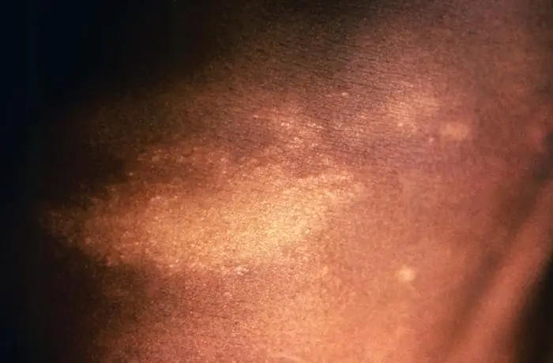
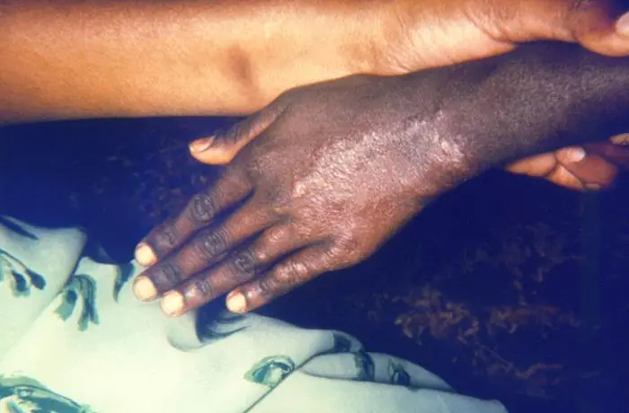
Foto membantu mengenali tanda. Mati rasa tidak terlihat di foto: tanyakan apakah bercak terasa kebal. Bercak yang mirip belum tentu kusta; kepastiannya oleh petugas Puskesmas.
Kader tidak menguji bercak dengan kapas, jarum, atau tangan, dan tidak menebak nama penyakitnya. Cukup tanyakan dengan sopan, lalu ajak periksa. Petugas Puskesmas yang memeriksa.
Kusta
Mitos atau fakta?
Kusta adalah kutukan atau penyakit keturunan.
Kusta bisa sembuh dengan obat gratis dari Puskesmas.
Bersalaman sekali dengan penderita kusta langsung membuat tertular.
Kusta yang ditemukan dan diobati sejak awal sangat mengurangi risiko cacat.
Sikap kader
Jaga rahasia, jangan menjauhi
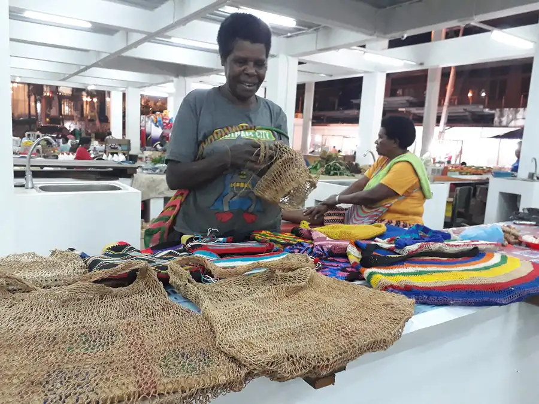
- Bicara empat mata, di tempat yang tenang.
- Jangan sebut nama penyakit di depan orang banyak.
- Tawarkan menemani ke Puskesmas.
- Keluarga serumah juga diajak diperiksa; Puskesmas yang mengatur.
- Penderita tetap boleh bekerja, sekolah, dan ikut ibadah.
- Jangan menyebut nama atau menunjuk orang yang punya bercak di posyandu, ibadah, atau pertemuan kampung.
Rasa takut dicap “kena kutukan” membuat orang menyembunyikan bercaknya. Cara kader berbicara menentukan apakah ia mau berobat. Pendeta atau majelis bisa ikut mengingatkan jemaat: merangkul saudara yang sakit, bukan menjauhinya.
Kaskado
Kaskado: sisik melingkar seperti ukiran
- Sisik berlapis-lapis membentuk lingkaran atau garis
- Gatal, bisa menutupi sebagian besar badan
- Disebabkan jamur, bukan kutukan
- Menular lewat sentuhan, pakaian, handuk, dan tikar bersama
Ajak periksa ke Puskesmas. Obat jamur sering harus diminum berminggu-minggu sampai tuntas, walau gatal sudah berkurang.
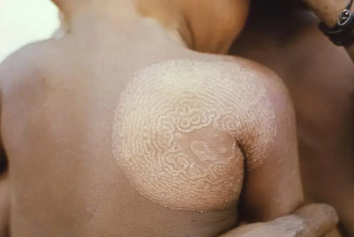
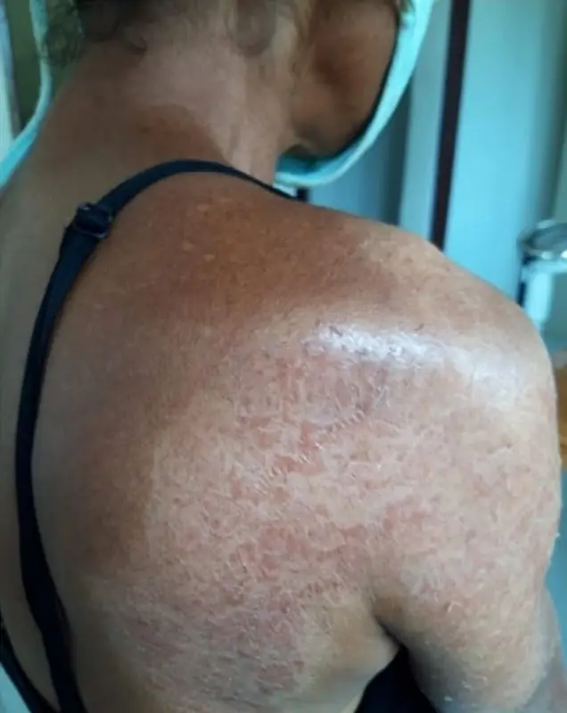
Foto membantu mengenali tanda. Kurap biasa bisa tampak mirip; kepastiannya oleh petugas Puskesmas.
Kudis (skabies)
Kudis: gatal malam, satu rumah ikut gatal
- Gatal hebat, terutama malam hari
- Bintil kecil di sela jari, pergelangan tangan, ketiak, pinggang, dan kelamin
- Beberapa orang serumah gatal juga
Obat dari Puskesmas dipakai seluruh keluarga bersamaan. Cuci dan jemur pakaian, sprei, dan tikar di bawah matahari.
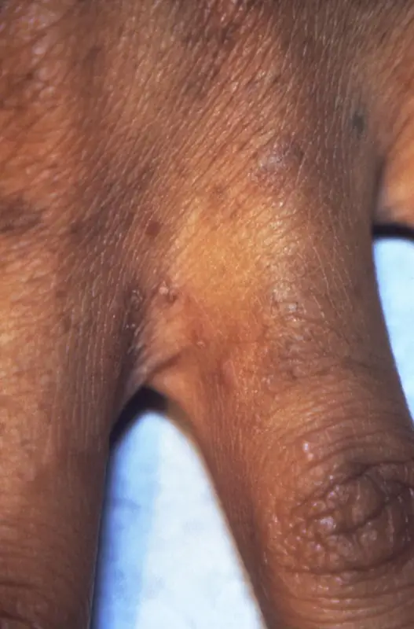
Foto membantu mengenali tanda. Tanyakan juga: gatal terutama malam? Orang serumah ikut gatal? Kepastiannya oleh petugas Puskesmas.
Frambusia
Frambusia: benjolan atau luka yang tak kunjung sembuh
- Benjolan atau luka di kulit, kadang seperti buah arbei
- Sering pada anak, di kaki atau tangan, biasanya tidak sakit
- Menular lewat sentuhan dengan luka
Bisa disembuhkan dengan obat dari Puskesmas. Anak-anak serumah dan teman bermain juga perlu diperiksa.
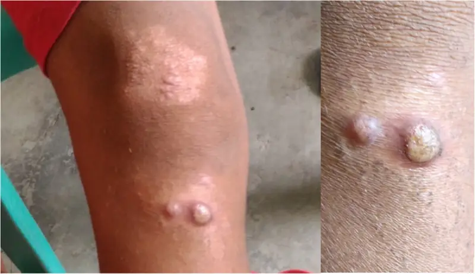
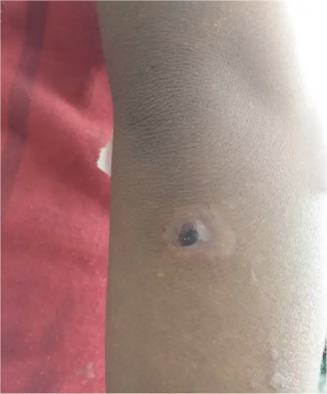
Foto membantu mengenali tanda. Luka anak yang tidak sembuh-sembuh tetap diperiksa walau tidak mirip foto ini.
Latihan
Rawat di rumah atau ke Puskesmas?
Siswa kelas 4 gatal, kulitnya bersisik melingkar seperti ukiran di punggung dan perut.
Bercak putih di lengan, tidak gatal. Pemiliknya bilang bercak itu tidak terasa.
Satu keluarga gatal setiap malam, ada bintil di sela jari.
Luka gores kecil di kaki, bersih, tidak dalam, tidak bengkak, tidak demam.
Latihan dengan foto
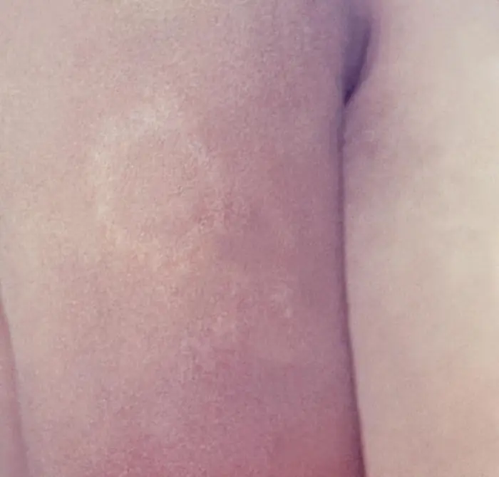
Bercak seperti di foto ini sudah beberapa bulan. Pemiliknya bilang bercak itu terasa kebal. Apa langkah kader?
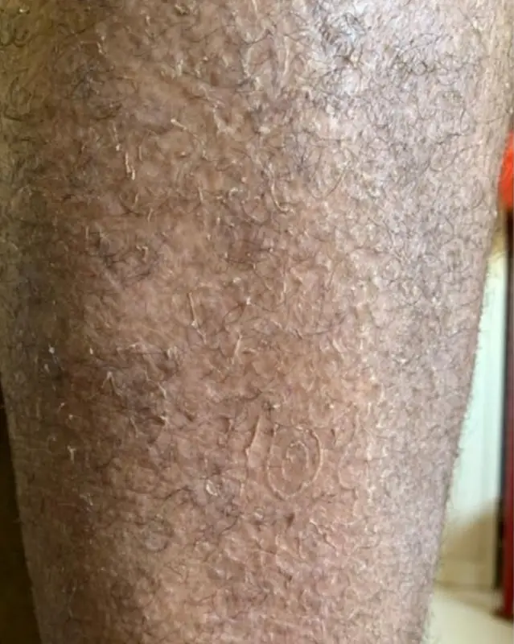
Kulit tungkai Bapa seperti di foto ini. Sudah seminggu ia minum obat jamur dari Puskesmas; gatalnya berkurang dan ia ingin berhenti. Apa saran kader?
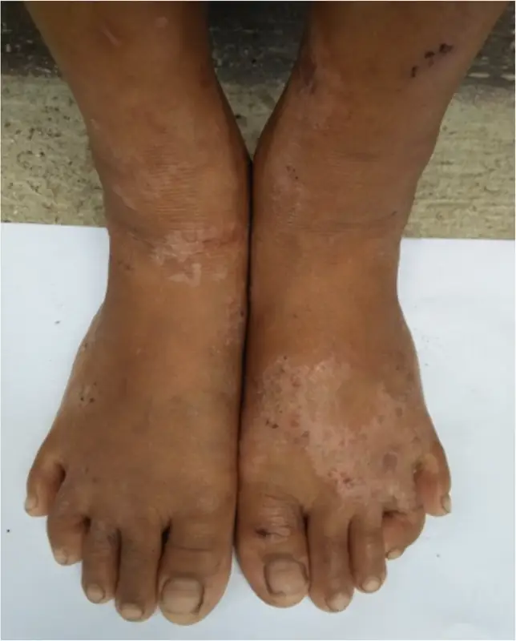
Kaki anak seperti di foto ini sudah lama bercak bersisik dan tidak sakit. Bentuknya tidak seperti buah arbei. Apa yang dilakukan?
Tanda bahaya
Kapan harus segera ke Puskesmas?
Berangkat SEKARANG, panggil bantuan
- Kulit melepuh atau mengelupas luas, apalagi di mulut atau mata, atau setelah minum obat baru
- Ruam dengan demam pada anak yang sangat lemas atau sulit dibangunkan
Ke Puskesmas HARI INI, jangan tunggu besok
- Luka bengkak, merah meluas, bernanah, atau disertai demam
- Ruam disertai demam tinggi
- Bercak mati rasa disertai tangan atau kaki lemah
Kebiasaan yang mencegah
- Mandi dengan sabun, potong kuku pendek.
- Tidak berbagi handuk, pakaian, atau sisir.
- Jemur tikar, kasur, dan pakaian di bawah matahari.
- Cuci luka dengan air bersih atau air yang sudah dimasak.
Cerita
Adik Markus dan teman sekelasnya
Tes akhir
Cek lagi: seberapa banyak yang diingat?
Pertanyaan yang sama seperti di awal. Setiap selesai menjawab, kunci jawaban dan penjelasannya langsung muncul.
Selesai
Kenali, ajak periksa, jaga rahasia
Yang diingat
- Bercak mati rasa? Ajak periksa ke Puskesmas. Kusta bisa sembuh dengan obat gratis.
- Kaskado dan kudis diobati sampai tuntas; keluarga serumah ikut diperiksa.
- Frambusia pada anak bisa disembuhkan dengan obat dari Puskesmas.
- Jaga rahasia; penyakit kulit bukan kutukan.
Sumber: Kemenkes, stok obat kusta Papua Barat (Sept 2025); WHO, lembar fakta kusta; Int J Dermatol 2026, tinea imbricata Indonesia timur (DOI 10.1111/ijd.70197). Rincian per klaim: Sumber per klaim. Status telaah klinis: belum ditinjau dokter Puskesmas (Tinjauan klinis).
Modul 4 dari 5
Gizi dan Gigi-Mulut
Anak yang giginya sakit sulit makan; anak yang kurang gizi mudah sakit. Keduanya saling berkaitan.
Setelah modul ini, kader bisa
- Menjelaskan ASI saja sampai 6 bulan dan makanan pendamping dengan lauk hewani.
- Membedakan berat tidak naik (bicarakan di posyandu) dari tanda anak sakit (antar hari ini).
- Mengajarkan sikat gigi pagi-malam dan kapan sakit gigi harus diperiksa.
Tes awal
Tebak dulu!
5 pertanyaan singkat sebelum belajar. Belum tahu tidak apa-apa, tebak saja. Kunci jawaban dan pembahasannya dibuka di akhir modul.
Bayi 0–6 bulan
ASI saja sampai 6 bulan
- Susui dalam 1 jam pertama setelah lahir.
- Sampai umur 6 bulan: ASI saja, tanpa air, teh, madu, pisang, atau bubur.
- Susui sesering bayi mau, siang dan malam.
- Lanjutkan ASI sampai umur 2 tahun atau lebih.
Bayi umur 4 bulan sering rewel. Nenek ingin memberinya pisang. Apa saran kader?
Bayi 6–24 bulan
Makanan pendamping mulai 6 bulan
| Umur | Bentuk makanan | Makan per hari |
|---|---|---|
| 6–8 bulan | Lumat dan kental, tidak encer | 2–3 kali, ditambah ASI |
| 9–11 bulan | Dicincang halus atau dipotong kecil | 3–4 kali, ditambah 1–2 kali makanan selingan |
| 12–24 bulan | Makanan keluarga | 3–4 kali, ditambah 1–2 kali makanan selingan |
Lauk hewani setiap hari: ikan, telur, ayam, atau hati. Singkong, ubi, papeda, atau sagu saja tidak cukup untuk tumbuh; tambahkan lauk dan sayur hijau.
Permainan
Isi piring anak 1 tahun
Ketuk makanan untuk sekali makan anak 1 tahun, lalu periksa. Harus ada makanan pokok, lauk hewani, dan sayur.
Tumbuh kembang
Timbang setiap bulan, catat di Buku KIA
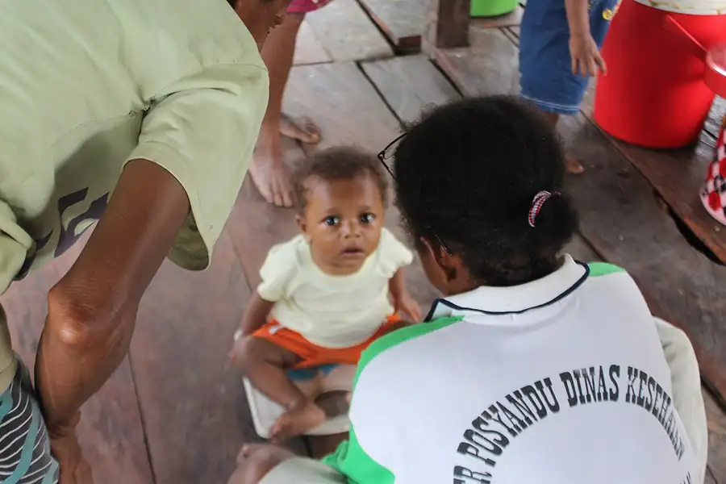
- Timbang di posyandu setiap bulan dan catat di Buku KIA.
- Anak belum punya Buku KIA? Minta ke bidan atau Puskesmas.
- Imunisasi diberikan di hari posyandu yang sama, jangan dilewatkan.
Bicarakan dengan bidan atau petugas gizi di posyandu bila: berat tidak naik 2 bulan berturut-turut, atau turun.
Berangkat sekarang bila: anak sangat lemas, sulit dibangunkan, atau tidak bisa minum.
Antar ke Puskesmas hari ini bila: kedua kaki bengkak, anak sangat kurus, atau tidak mau makan. Ini bisa gizi buruk atau penyakit lain; petugas yang memeriksa.
Ibu
Ibu hamil dan menyusui makan lebih
- Porsi lebih dari biasa, dengan lauk hewani dan sayur setiap kali makan.
- Tablet tambah darah setiap hari selama hamil.
- Gusi berdarah saat hamil? Tetap sikat gigi pelan-pelan dan ceritakan ke bidan.
Gigi
Sikat gigi pagi dan malam
- Sikat gigi 2 kali sehari: pagi setelah sarapan dan malam sebelum tidur.
- Pakai pasta gigi berfluoride.
- Bayi yang belum bergigi: bersihkan gusi dengan kain bersih yang dibasahi.
- Orang tua membantu menyikat gigi anak kecil.
| Umur anak | Banyaknya pasta gigi |
|---|---|
| Di bawah 3 tahun | Sebesar butir beras |
| 3–6 tahun | Sebesar kacang polong |
Susun urutan menyikat gigi malam hari.
Gigi
Kurangi yang manis
- Kurangi permen, biskuit manis, dan minuman manis.
- Jangan tidurkan anak dengan botol susu atau teh manis.
- Minum air putih yang sudah dimasak.
Adik selalu tidur sambil mengisap botol teh manis. Apa saran kader?
Mulut
Pinang sirih dan kesehatan mulut
Pinang sirih adalah tanda persaudaraan dan adat yang dihormati. Tetapi pinang sendiri, walau tanpa tembakau, bisa menyebabkan kanker mulut; kapur dan tembakau menambah risikonya.
- Paling aman: tidak memakai, atau berhenti. Sulit berhenti? Kurangi sedikit demi sedikit; bidan bisa membantu.
- Jangan beri pinang pada anak.
- Kurangi kapur; kapur melukai gusi dan pipi bagian dalam.
- Jangan campur dengan tembakau.
- Ibu hamil sebaiknya berhenti; bicarakan dengan bidan.
- Berkumur air bersih dan sikat gigi setelah makan pinang menjaga gigi, tetapi tidak menghapus risiko kanker.
- Luka, bercak putih, atau bercak merah di mulut yang tidak sembuh 2 minggu: periksa ke Puskesmas.
Anak 5 tahun ingin ikut makan pinang seperti orang tuanya.
Tanda bahaya
Kapan sakit gigi harus diperiksa
Berangkat SEKARANG, panggil bantuan
Sakit gigi dengan sulit membuka mulut, sulit menelan, atau sulit bernapas: bengkaknya bisa menutup jalan napas.
Ke Puskesmas HARI INI bila sakit gigi disertai
- Pipi atau leher bengkak
- Demam
Jangan ditunda dengan kumur air garam atau obat sendiri. Infeksi gigi bisa menyebar.
Periksakan juga:
- Anak tidak mau makan karena sakit gigi
- Luka di mulut yang tidak sembuh 2 minggu
Puskesmas Momiwaren belum punya dokter gigi. Perawat atau dokter Puskesmas akan memeriksa lebih dulu dan merujuk bila perlu.
Cerita
Adik Nando, 10 bulan
Tes akhir
Cek lagi: seberapa banyak yang diingat?
Pertanyaan yang sama seperti di awal. Setiap selesai menjawab, kunci jawaban dan penjelasannya langsung muncul.
Selesai
Makan bergizi, gigi sehat
Yang diingat
- ASI saja sampai 6 bulan, lanjut sampai 2 tahun.
- Mulai 6 bulan: makanan pendamping dengan lauk hewani setiap hari.
- Timbang setiap bulan; berat tidak naik berarti bicarakan dengan bidan.
- Sikat gigi pagi dan malam; kurangi yang manis; jangan beri pinang pada anak.
Sumber: WHO, infant and young child feeding; Buku KIA Kemenkes 2024; SSGI 2024 (stunting Manokwari Selatan 26,4%); WHO, identifikasi gizi buruk; IARC, pinang (areca nut). Rincian per klaim: Sumber per klaim. Status telaah klinis: belum ditinjau bidan dan petugas gizi (Tinjauan klinis).
Modul 5 dari 5
Remaja dan Pemuda
Tubuhmu, keputusanmu, masa depanmu. Modul ini untuk remaja dan pemuda, dipakai bersama guru, bidan, kader, atau pengurus pemuda gereja.
Setelah modul ini, kader bisa
- Menjelaskan perubahan tubuh dan haid tanpa membuat malu.
- Mengenali tanda pacaran tidak sehat dan tahu ke mana melapor bila ada kekerasan.
- Menjelaskan cara HIV menular dan tidak menular, serta di mana tes gratis.
Untuk fasilitator
- Sepakati aturan: saling menghormati, tidak menertawakan, cerita teman tidak dibawa keluar.
- Sediakan kotak pertanyaan tanpa nama.
- Bila perlu, pisahkan kelompok putra dan putri.
- Ada yang bercerita mengalami kekerasan? Dengarkan, jangan menyalahkan, lalu hubungkan ke bidan atau layanan pengaduan.
Tes awal
Tebak dulu!
5 pertanyaan singkat sebelum belajar. Belum tahu tidak apa-apa, tebak saja. Kunci jawaban dan pembahasannya dibuka di akhir modul.
Pubertas
Tubuh yang berubah itu wajar
Setiap orang mulai pada waktu yang berbeda, biasanya antara umur 8 dan 14 tahun.
Perempuan
- Payudara tumbuh, pinggul melebar
- Rambut tumbuh di ketiak dan kemaluan
- Mulai haid
Laki-laki
- Suara berubah, jakun tumbuh
- Kumis dan rambut di ketiak serta kemaluan
- Mimpi basah
Keduanya: jerawat, keringat lebih banyak, dan perasaan yang cepat berubah.
Mimpi basah pada remaja laki-laki berarti…
Haid
Haid: sehat dan tidak memalukan
- Haid datang kira-kira sebulan sekali, selama beberapa hari.
- Ganti pembalut beberapa kali sehari dan cuci tangan. Pembalut kain dicuci bersih dan dijemur di bawah matahari.
- Tetap mandi dan keramas saat haid.
- Nyeri ringan wajar: kompres hangat dan istirahat.
Remaja putri minum 1 tablet tambah darah setiap minggu, biasanya dibagikan di sekolah, supaya tidak kurang darah.
Ke bidan bila
- Haid sangat banyak sampai tembus berkali-kali
- Nyeri sangat hebat sampai tidak bisa sekolah
- Belum pernah haid sampai umur 15 tahun
- Terlambat haid setelah berhubungan seks
“Saat haid tidak boleh mandi atau keramas.”
Pacaran
Pacaran sehat: saling menghormati
Tidak berarti tidak. Diam, takut, atau mabuk bukan berarti setuju.
Ketuk semua tanda pacaran yang tidak sehat, lalu periksa.
Kekerasan
Kalau mengalami kekerasan
Kekerasan seksual tidak pernah salah korban, siapa pun pelakunya.
- Ceritakan pada orang dewasa yang kamu percaya: orang tua, guru, bidan, atau pendeta.
- Datang ke Puskesmas sekarang. Obat pencegah HIV makin cepat makin baik, paling lambat 3 hari (72 jam); pencegah kehamilan sampai 5 hari. Lewat dari itu tetap datang: pemeriksaan, pengobatan, dukungan, dan perlindungan tetap bisa diberikan.
- Laporkan supaya mendapat pendampingan dan perlindungan.
Temanmu bercerita tadi malam dipaksa berhubungan seks oleh orang yang lebih tua. Ia sekarang di tempat aman. Apa yang paling menolong?
Masa depan
Tunda menikah, kejar cita-cita
Undang-undang menetapkan usia menikah minimal 19 tahun, untuk perempuan dan laki-laki.
- Tubuh remaja belum siap hamil: lebih berisiko kurang darah, persalinan sulit, dan bayi lahir kecil.
- Hamil saat sekolah sering membuat putus sekolah.
- Sudah berhubungan seks dan terlambat haid? Segera ke bidan. Bidan menjaga rahasia.
Berapa usia menikah minimal menurut undang-undang?
Hamil di usia muda
Kalau sudah hamil
- Ke bidan sejak awal. Pemeriksaan sangat penting karena risiko kehamilan remaja lebih tinggi.
- Cari dukungan: orang tua, bidan, guru, atau pendeta.
- Bicarakan dengan sekolah supaya tetap bisa belajar.
Jangan minum ramuan atau obat dari orang yang bukan tenaga kesehatan untuk menggugurkan. Bisa menyebabkan perdarahan, infeksi, dan kematian. Bicarakan dengan bidan atau dokter tentang langkah yang aman dan sesuai aturan.
HIV
HIV: tahu cara menular, tahu cara mencegah
Tanah Papua termasuk daerah dengan kasus HIV tertinggi di Indonesia. HIV bisa dicegah, dites gratis, dan diobati.
Menular lewat
- Hubungan seks tanpa kondom dengan orang yang terinfeksi
- Jarum suntik, alat tato, atau tindik bergantian
- Dari ibu ke bayi, yang bisa dicegah bila ibu dites dan berobat
Tidak menular lewat
- Bersalaman dan berpelukan
- Makan bersama dan berbagi gelas
- Gigitan nyamuk
- Mandi atau berenang bersama
Cara mencegah
- Tunda hubungan seks.
- Setia pada satu pasangan, dan keduanya sudah dites dengan hasil negatif.
- Pakai kondom bila berhubungan seks.
- Jangan berbagi jarum, alat tato, atau tindik.
- Tes HIV di Puskesmas: gratis dan rahasia.
“HIV bisa menular lewat makan sepiring bersama.”
“Orang dengan HIV yang minum obat teratur bisa hidup sehat, sekolah, dan bekerja.”
Infeksi menular seksual
Jangan malu periksa
- Keputihan yang berbau, gatal, atau berubah warna
- Luka, kutil, atau benjolan di kelamin, walau tidak sakit
- Nyeri atau panas saat buang air kecil
- Cairan keluar dari penis
Sebagian infeksi tidak menimbulkan tanda. Periksa ke Puskesmas; petugas menjaga rahasia. Pasangan juga diperiksa dan diobati. Jangan beli obat sendiri.
Ada luka kecil di kelamin yang tidak sakit.
Alkohol dan zat
Alkohol, lem, dan rokok
Warga Momiwaren menyebut gangguan orang mabuk sebagai masalah nomor satu di kampung.
- Mabuk membuat orang mudah berkelahi, celaka di jalan, dan melakukan seks tanpa persetujuan atau tanpa pengaman.
- Menghirup lem merusak otak dan bisa menyebabkan kematian mendadak.
- Rokok dan pinang merusak paru-paru, gigi, dan mulut.
Teman-teman mengajakmu mencoba menghirup lem supaya dianggap berani.
Kesehatan jiwa
Perasaanmu penting
- Sedih lama, mudah marah, sulit tidur, atau merasa tidak berguna? Ceritakan pada orang yang kamu percaya.
- Pernah terpikir menyakiti diri atau ingin mati? Minta bantuan sekarang.
- Teman tampak sangat sedih atau bicara ingin mati? Dengarkan, jangan tinggalkan sendirian, dan ajak cari bantuan.
Layanan
Tempat bertanya yang aman
- Puskesmas: layanan kesehatan peduli remaja untuk bertanya, periksa, dan konseling.
- Posyandu remaja di kampung.
- Guru bimbingan konseling, pendeta, atau kader yang kamu percaya.
Petugas kesehatan wajib menjaga rahasia. Kamu boleh bertanya tanpa takut dimarahi.
Kamu ingin bertanya soal haid yang tidak teratur, tetapi malu. Apa yang paling tepat?
Cerita
Yosina dan Agus
Tes akhir
Cek lagi: seberapa banyak yang diingat?
Pertanyaan yang sama seperti di awal. Setiap selesai menjawab, kunci jawaban dan penjelasannya langsung muncul.
Selesai
Tubuhmu, keputusanmu, masa depanmu
Yang diingat
- Perubahan tubuh itu wajar; haid tidak memalukan.
- Tidak berarti tidak. Kekerasan tidak pernah salah korban: cerita, ke Puskesmas sekarang (obat pencegah HIV makin cepat makin baik, paling lambat 3 hari; pencegah kehamilan sampai 5 hari; lewat pun tetap datang), lapor ke SAPA 129.
- Tunda menikah sampai minimal 19 tahun.
- HIV bisa dicegah; tes di Puskesmas gratis dan rahasia.
- Perasaanmu penting: Healing119, telepon 119 lalu tekan 8.
Sumber: UU 16/2019 (usia perkawinan); UU 12/2022 (tindak pidana kekerasan seksual); SE Dirjen Kesmas 2016 (tablet tambah darah remaja putri); WHO 2024, profilaksis pascapajanan HIV (≤72 jam); WHO, kontrasepsi darurat (≤120 jam); KemenPPPA SAPA 129; Kemenkes Healing119. Rincian per klaim: Sumber per klaim. Status telaah klinis: belum ditinjau bidan, guru BK, dan pendeta (Tinjauan klinis).
Dipakai semua kader
Berangkat sekarang, atau periksa hari ini?
Dua tingkat. Sekarang berarti panggil bantuan dan berangkat saat itu juga. Hari ini berarti periksa ke Puskesmas hari ini, jangan tunggu besok.
Berangkat SEKARANG, panggil bantuan
- Perdarahan banyak: ibu hamil, bersalin, nifas, atau siapa pun
- Kejang
- Tidak sadar, atau sulit dibangunkan
- Tidak bernapas normal, sesak berat, bibir atau lidah biru
- Ibu hamil atau nifas: sakit kepala hebat dengan bengkak di wajah dan tangan, atau pandangan kabur
- Bayi di bawah 2 bulan: tidak mau menyusu, lemas, kejang, napas cepat atau merintih, demam atau badan dingin, atau kuning di hari pertama
- Ibu hamil: bayi dalam perut kurang bergerak dibanding biasanya (hubungi bidan sekarang)
- Anak tidak bisa minum, atau memuntahkan semua
- Anak: dinding dada bawah tertarik ke dalam saat bernapas; diare dengan mata cekung dan cubitan kulit perut kembali sangat lambat
- Air ketuban pecah sebelum waktunya, hijau, atau berbau
- Kulit melepuh atau mengelupas luas, apalagi di mulut atau mata
- Digigit ular; tenggelam, walau sudah sadar
Tidak sadar dan tidak bernapas normal? Mulai tekan dada sambil orang lain memanggil bantuan (Modul 1; anak dan bayi: layar Anak dan bayi).
Periksa HARI INI, jangan tunggu besok
- Demam, siapa pun: periksa darah malaria
- Ibu hamil: muntah terus sampai tidak bisa makan
- Bayi: kuning yang muncul di hari kedua atau sesudahnya, tali pusat bernanah
- Anak: napas cepat; diare dengan mata cekung atau cubitan kulit lambat (satu tanda saja)
- Batuk 2 minggu atau lebih: periksa dahak
- Bercak kulit mati rasa; luka atau sariawan yang tidak sembuh 2 minggu
Keluarga takut atau ingin berembuk dulu? Itu wajar. Berdoa dan berembuk bisa sambil berangkat. Perdarahan, kejang, dan sesak tidak bisa menunggu.
Alat bantu
Hitung napas anak 60 detik
Periksa dulu sebelum menghitung
Jangan hitung. Langsung antar ke Puskesmas sekarang bila anak:
- sulit dibangunkan atau sangat lemas
- kejang
- bibir atau lidah kebiruan
- dada bawah tertarik ke dalam saat menarik napas
- tidak bisa minum atau menyusu, atau memuntahkan semua
- bayi di bawah 2 bulan: demam, badan teraba dingin, atau merintih
Hitung saat anak tenang atau tidur. Lihat perut atau dadanya naik turun; satu naik-turun dihitung satu napas. Anak menangis? Tunggu tenang dulu.
| Umur | Napas cepat bila |
|---|---|
| Di bawah 2 bulan | 60 kali atau lebih per menit |
| 2–11 bulan | 50 kali atau lebih per menit |
| 12–59 bulan (1 sampai belum 5 tahun) | 40 kali atau lebih per menit |
Mata tetap ke anak: ketuk lingkaran setiap kali dada atau perut naik, angkanya terisi sendiri setelah 60 detik. Boleh juga menghitung sendiri lalu mengetik angkanya.
Alat ini membantu memutuskan mengantar ke Puskesmas. Alat ini tidak bisa menyatakan anak sehat.
Malaria
Demam? Periksa darah hari itu juga
Di Momiwaren, setiap demam diperiksa darahnya di Puskesmas atau bidan hari itu juga, terutama pada balita dan ibu hamil.
Berangkat sekarang bila demam disertai
- Kejang
- Sangat lemas, tidak bisa duduk atau berdiri, sulit dibangunkan
- Sesak napas
- Sangat pucat, terlihat di telapak tangan
- Kencing gelap seperti teh
- Mata atau kulit kuning
- Muntah terus, tidak bisa minum
Mencegah
- Tidur di dalam kelambu setiap malam, terutama ibu hamil dan anak.
- Kelambu robek? Jahit atau minta ganti ke Puskesmas.
Obat
- Hanya dari petugas setelah darah diperiksa.
- Diminum sampai habis walau badan sudah enak.
- Jangan berbagi atau menyimpan sisa obat.
Anak 3 tahun demam sejak tadi malam, tetapi masih mau main.
Diare
Diare: oralit, zinc, terus menyusu
Di rumah
- Teruskan ASI dan makan seperti biasa.
- Larutkan 1 bungkus oralit dalam air matang sesuai takaran di bungkusnya (di Indonesia umumnya 1 gelas, 200 ml). Aduk sampai larut. Sisa larutan dibuang setelah 24 jam.
- Beri setiap habis buang air cair, sedikit-sedikit dengan sendok: di bawah 2 tahun ¼–½ gelas (50–100 ml); 2 tahun ke atas ½–1 gelas (100–200 ml).
- Zinc dari bidan atau Puskesmas diminum 10 hari berturut-turut, walau diare sudah berhenti.
- Cuci tangan pakai sabun; minum air yang sudah dimasak.
Berangkat sekarang bila
- Sangat lemas, sulit dibangunkan
- Tidak bisa minum, atau memuntahkan semua
- Mata cekung dan cubitan kulit perut kembali sangat lambat (dua tanda bersama)
Periksa hari ini bila
- Mata cekung, atau cubitan kulit perut kembali lambat (salah satu saja)
- Ada darah di tinja
- Diare 2 minggu atau lebih
Oralit dan zinc tersedia gratis di posyandu, bidan, atau Puskesmas. Simpan beberapa bungkus oralit di rumah.
Gigitan ular
Digigit ular: diam, bidai, gotong
Lakukan
- Jauhi ularnya. Jangan mencoba menangkap atau membunuh.
- Tenangkan korban. Jangan biarkan berjalan: gotong ke kendaraan.
- Lepas cincin, gelang, atau sepatu di bagian yang digigit.
- Pasang bidai dari kayu atau bambu supaya tidak bergerak.
- Berangkat sekarang ke Puskesmas, walau belum ada keluhan.
Jangan
- Mengikat kencang dengan tali atau kain
- Menyayat atau mengisap luka
- Memijat atau mengompres es
- Menunggu sampai lemas atau sesak
Bisa ular di Papua bisa melumpuhkan otot napas. Kelopak mata turun, sulit menelan, atau napas melemah berarti sangat gawat: berangkat sekarang. Napas melemah dan kamu dilatih: bantu napas buatan di perjalanan. Berhenti bernapas: tekan dada, dan napas buatan bila dilatih (Modul 1).
Nomor penting
Siapa yang dihubungi
Ketuk nomor untuk menelepon langsung.
Tidak ada sinyal? Kirim satu orang ke Puskesmas atau rumah bidan, dan satu orang menyiapkan kendaraan kampung yang sudah disepakati.
Sumber: WHO IMCI chart booklet (napas cepat, tanda bahaya umum, diare); Buku KIA Kemenkes 2024 (tanda bahaya ibu dan bayi); WHO Oral Rehydration Salts; WHO snakebite. Alat hitung napas hanya memakai batas napas cepat IMCI/MTBS; tanda bahaya diperiksa tersendiri. Rincian per klaim: Sumber per klaim. Status telaah klinis: belum ditinjau dokter Puskesmas (Tinjauan klinis).